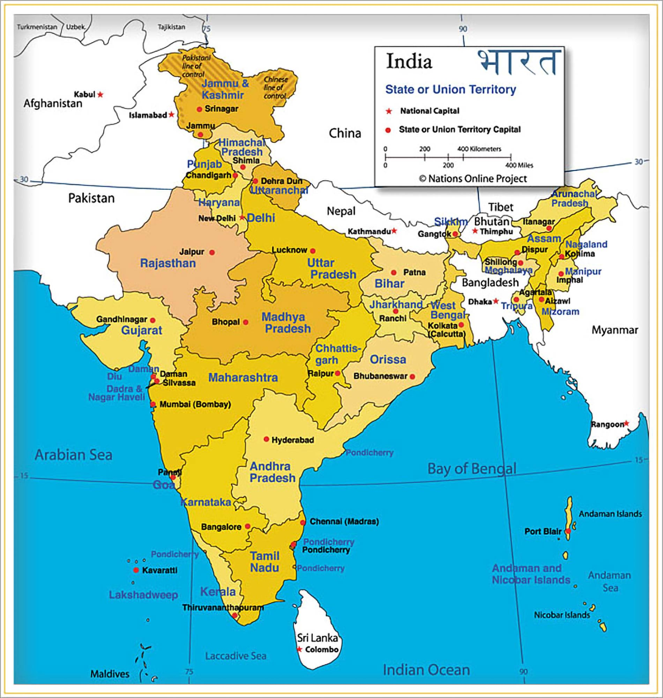

List
- Indian Flag
- Indian Map
- Gateway of India
- Golden Temple
India, country that occupies the greater part of South Asia. It is made up of 28 states and eight union territories, and its national capital is New Delhi, built in the 20th century just south of the historic hub of Old Delhi to serve as India’s administrative center. Its government is a constitutional republic that represents a highly diverse population consisting of thousands of ethnic groups and hundreds of languages. India became the world’s most populous country in 2023, according to estimates by the United Nations.

The map of India, with its intricate borders and diverse geography, tells the story of a nation steeped in history and cultural richness. From the snow-capped peaks of the Himalayas in the north to the sun-kissed beaches of the Indian Ocean in the south, India's map is a tapestry of varied landscapes and ecosystems. Its political boundaries delineate the territory of one of the world's oldest civilizations, encompassing vibrant states and union territories, each with its own unique identity and heritage. The map of India is not just a geographical representation but a reflection of its people's unity in diversity, echoing the country's ethos of pluralism and coexistence. It serves as a navigational tool for travelers and a canvas for historians, geographers, and policymakers alike, offering insights into the nation's past, present, and future aspirations.
The Gateway of India, an architectural marvel nestled along the bustling waterfront of Mumbai, stands as a testament to the city's rich history and enduring spirit. Its grandeur, with intricately carved arches and imposing structure, commands attention, drawing both locals and tourists alike to its majestic presence. Built to commemorate the visit of King George V and Queen Mary in 1911, this iconic landmark has since witnessed the ebb and flow of time, silently observing the evolution of Mumbai from colonial times to the bustling metropolis it is today. Beyond its architectural significance, the Gateway of India holds a special place in the hearts of Mumbaikars, symbolizing resilience, strength, and the enduring legacy of a city that continues to thrive amidst the challenges of the modern world.
The Golden Temple, also known as Harmandir Sahib, is a revered gurdwara located in Amritsar, Punjab, India1. It’s the most important pilgrimage site for Sikhs and is known for its beautiful golden façade. The temple was founded by Guru Arjan, the fifth Sikh Guru, and was completed in 1589